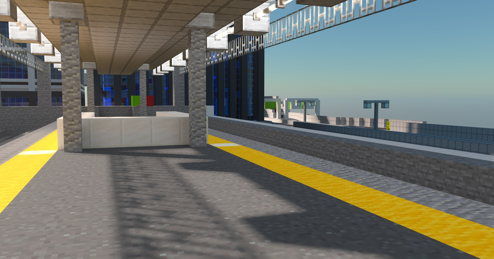

会社概要

海急グループは、都市と地方、国と世界をつなぐ総合交通インフラ企業です。
鉄道・高速道路・航空輸送・貨物輸送など、広範な交通手段を通じて社会の基盤を支えるとともに、
物販事業や地域密着型サービス、観光業など、多岐にわたる事業を展開しております。
私たちは、安全・快適・信頼の輸送サービスを通じ、地域社会の発展と未来の豊かさに貢献します。
鉄道事業
海急グループの鉄道事業は、華島・京園・広崎といった主要都市を結ぶ海急海浜線をはじめ、新海場新幹線や都市部を支える地下鉄網など、短距離から長距離まで幅広い輸送ニーズに対応する路線網を展開しています。
通勤・通学から観光・ビジネスまで、地域と人々の暮らしを支える基幹交通として、安全・快適・迅速な鉄道サービスを提供しています。
高速道路事業
海急グループの高速道路事業は、華島・京園・広崎といった主要都市を結ぶ高速道路網を整備・運営するとともに、華島内の首都高速環状線などの都市高速道路も担当しています。
物流や人の円滑な移動を支える基幹インフラとして、安全かつ効率的な交通環境の提供に努めています。
航空事業
海急グループの航空事業は、石崎空港、広崎空港、丸府斗空港を拠点とし、多様な路線網を展開しています。
国内外を結ぶ空の交通網を通じて、安全かつ迅速に人々と貨物の輸送を担い、地域経済の発展に貢献しています。